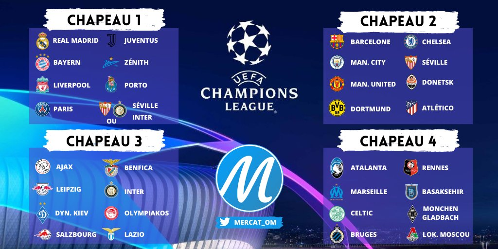
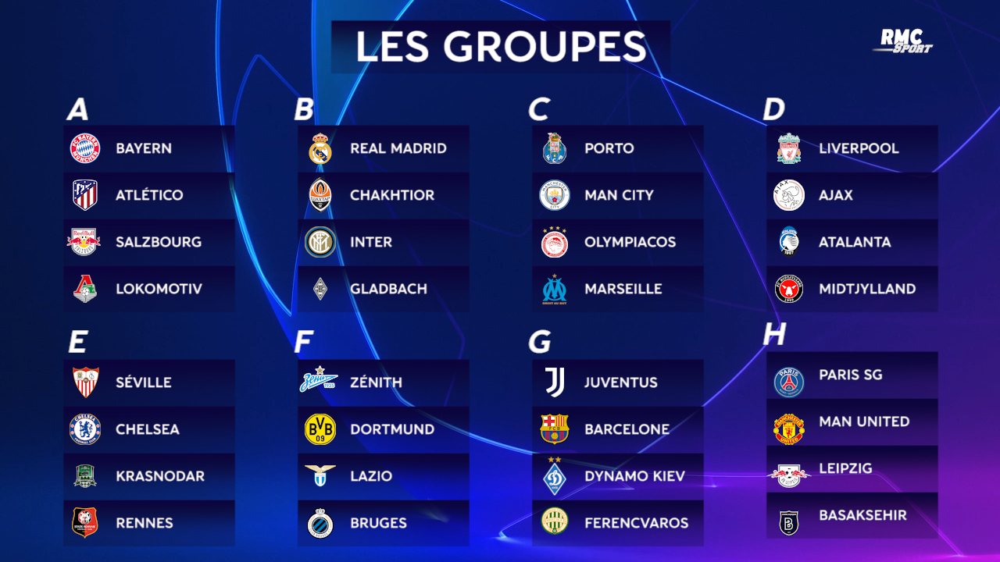
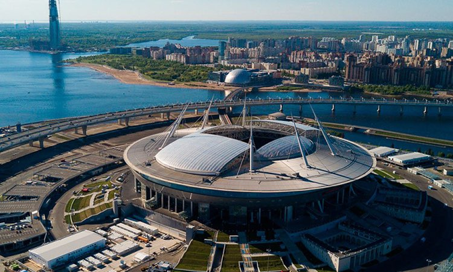

La ligue des champions de l'UEFA(UEFA Champions League), parfois abrégée en C1 et anciennement dénommée Coupe des clubs champios européens (de sa création en 1955 jusqu'en 1992), est une compétition annuelle de football organisée par l'Union des associations européennes de football (UEFA) et regroupant les meilleurs clubs du continent européen.C'est la compétition interclubs de football la plus prestigieuse d'Europe devant la Ligue Europa.

Elle regroupe 32 équipes qui s’affrontent dans un premier temps dans des groupes de 4 équipes tirer au sors par rapport aux différents chapeaux.

Dans un second temps les 2 premières équipes de chaque poules sont qualifiées pour des matchs à élimination directs qui sont sous format de match aller retour(un dans chaque stades des équipe qui s’affrontent). Ces matchs aller retour vont des huitièmes de finales à la demi-finale. Les 3èmes de chaque groupes eux seront reversée en 16ème de finale de la Ligue Europa. Les 4ème eux , seront éliminées de toute compétition européennes.
La dernière phases de la compétition est la finale où les deux équipes qui y sont parvenues se rencontreront dans un match simple de 90min ( prolongation si besoin) dans un stade préalablement choisie par l’UEFA en l’occurrence le stade choisi pour l’édition 2020/2021 est le Stade olympique Atatürk à Istanbul
